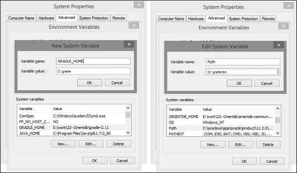

Gradle is a build tool, based on Java. There are some prerequisites that needs to be installed before installing the Gradle framework.
JDK and Groovy are the prerequisites for Gradle installation.
Gradle requires JDK version 6 or later to be installed in your system. It uses the JDK libraries which is installed and sets to the JAVA_HOME environmental variable.
Gradle carries its own Groovy library, therefore, we do no need to install Groovy explicitly. If it is installed, that is ignored by Gradle.
Following are the steps to install Gradle in your system.
First of all, you need to have Java Software Development Kit (SDK) installed on your system. To verify this, execute Java –version command in any of the platform you are working on.
Execute the following command to verify Java installation. I have installed JDK 1.8 in my system.
C:\> java - version
If the command is executed successfully, you will get the following output.
java version "1.8.0_66" Java(TM) SE Runtime Environment (build 1.8.0_66-b18) Java HotSpot(TM) 64-Bit Server VM (build 25.66-b18, mixed mode)
Execute the following command to verify Java installation. I have installed JDK 1.8 in my system.
$ java - version
If the command is executed successfully, you will get the following output.
java version "1.8.0_66" Java(TM) SE Runtime Environment (build 1.8.0_66-b18) Java HotSpot(TM) 64-Bit Server VM (build 25.66-b18, mixed mode)
We assume the readers of this tutorial have Java SDK version 1.8.0_66 installed on their system.
Download the latest version of Gradle from the Download Gradle link. In the reference page, click on the Complete Distribution link. This step is common for any platform. For this you will get the complete distribution file into your Downloads folder.
Setting up the environment means we have to extract the distribution file and copy the library files into proper location. Setting up GRADLE_HOME and PATH environmental variables.
This step is platform dependent.
Extract the downloaded zip file named gradle-2.11-all.zip and copy the distribution files from Downloads\gradle-2.11\ to C:\gradle\ location.
Later, add the C:\gradle and C:\gradle\bin directories to the GRADLE_HOME and PATH system variables. Right-click on My Computer → Click properties → Advanced system settings → Environment variables. There you will find a dialog box for creating and editing system variables. Click ‘New’ button for creating GRADLE_HOME variable (follow the left side screenshot). Click ‘Edit’ for editing the existing Path system variable (follow the right side screenshot). The process is shown in the following screenshots.
Extract the downloaded zip file named gradle-2.11-all.zip then you will find an extracted file named gradle-2.11.
You can use the following to move the distribution files from Downloads/gradle-2.11/ to /opt/gradle/ location. Execute this operation from the Downloads directory.
$ sudo mv gradle-2.11 /opt/gradle
Edit the ~/.bashrc file and paste the following content to it and save it.
export ORIENT_HOME = /opt/gradle export PATH = $PATH:
Execute the following command to execute ~/.bashrc file.
$ source ~/.bashrc
You can execute the following command in command prompt.
C:\> gradle –v
Output − You will find the Gradle version.
------------------------------------------------------------ Gradle 2.11 ------------------------------------------------------------ Build time: 2016-02-08 07:59:16 UTC Build number: none Revision: 584db1c7c90bdd1de1d1c4c51271c665bfcba978 Groovy: 2.4.4 Ant: Apache Ant(TM) version 1.9.3 compiled on December 23 2013 JVM: 1.7.0_60 (Oracle Corporation 24.60-b09) OS: Windows 8.1 6.3 amd64
You can execute the following command in terminal.
$ gradle –v
Output − You will find the Gradle version.
------------------------------------------------------------ Gradle 2.11 ------------------------------------------------------------ Build time: 2016-02-08 07:59:16 UTC Build number: none Revision: 584db1c7c90bdd1de1d1c4c51271c665bfcba978 Groovy: 2.4.4 Ant: Apache Ant(TM) version 1.9.3 compiled on December 23 2013 JVM: 1.7.0_60 (Oracle Corporation 24.60-b09) OS: Linux 3.13.0-74-generic amd64